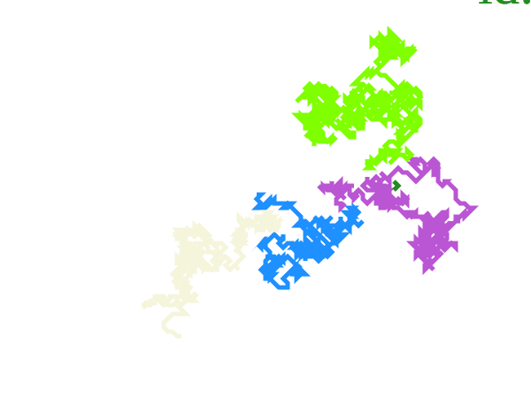
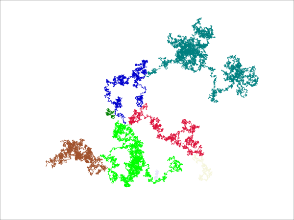

Table of Contents
Visualizing Brownian Motion
Brownian Tree
A program to generate a brownian tree
Problem Statement
writing the program.
visualization
visualizing brownian walks worked really well in svg format because they are just a collection of line segments. but brownian tree is a collection of slightly touching particles so the particle must be a circle with just enough radius so it looks touched with it's neighbors. a few points to consider.
- What does the tree look like, if the particles are square shaped?
- or different polygon shaped?
- if a particle can have more than 8 neighbors?
testing
Complete test suites for svg brownian-trails and brownian-tree packages. Adding new features and debugging the whole project becomes a hassle. When adding a new feature to svg package, add a corresponding test to test-suite and it's taken care off. Jumping between packages takes a lot of time to debug.
Generate Brownian Walk images
This part of the program was a result of me misunderstanding the actual process of brownian tree, but the result is visually compelling so this part is left as it is and was not scrubbed.
real life analogy for this problem
A dog is searching for a treasure, when it finds the treasure it stops. The next dog just needs to find the trail of one of the previous trails.
visualizing brownian walks.
- A seed is placed randomly somewhere on the screen.
- A particle is placed randomly on the screen and is given a motion pattern(typically random)
- When the particle collides with the seed or tree, the whole walk is fixed and drawn.
TODO Writing the program
Most of the stuff is straight forward.
coloring and labelling
There is an option to introduce variable number of branches so coloring needs to be from a carefully selected group. Either bright on a dark background or dark colors on a white background. Each branch must also be labelled by color and the it's length. Push the metadata to another variable when a walk is correctly found.
DONE tree buffer
checking if the new step connects to the tree becomes costly for very large tree around sizes 40000 etc… so it might be better to compress the walk to set of points that make the walk and then add the points to tree set. Compressing or using a set is also very slow. It might be better to use 2x2 arrays with boolean values to keep track of which points belong to the tree. Writing a full tree-class might be a better way.
DONE random walk
Must have a better understanding of random states in clisp, Multidimensional Arrays. Making do with lists and simple built-in random function.
DONE image rendering
Writing pgm format might be easy, but learning to work with svg might be better of computer generated images. So I'll have a look at svg libraries available for clisp. SVG is special xml file. With the tools available to write xml files svg becomes a lot better. Writing a svg library becomes very complicated, must use existing xml libraries. Just writing a subset of svg that will be required for this project.
Loading the program
Push the project directory name to asdf:*central-registory* and the load it with (ql:quickload :project-name)
Samples

Figure 1: A low density walk 100x100.

Figure 2: A high density walk 1200x900.